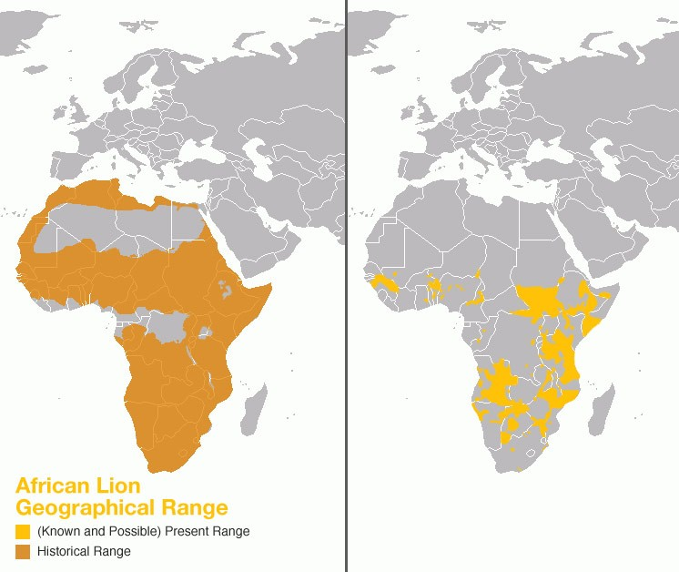
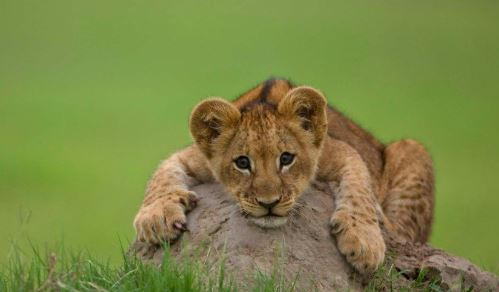
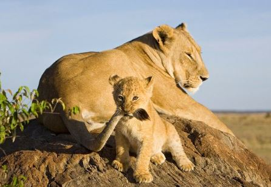

Lions are the most


The map above illustrates the crisis in the current population
of lions in Africa. The left side represents the historic
distribution of lions while the right side represents the current
distribution of lions in Africa. It has been estimated that the
population of lions has decreased by 60% in the last 40 years and
continues to diminish at an alarming rate. Experts predict that
the species will be extinct by the year 2050.
